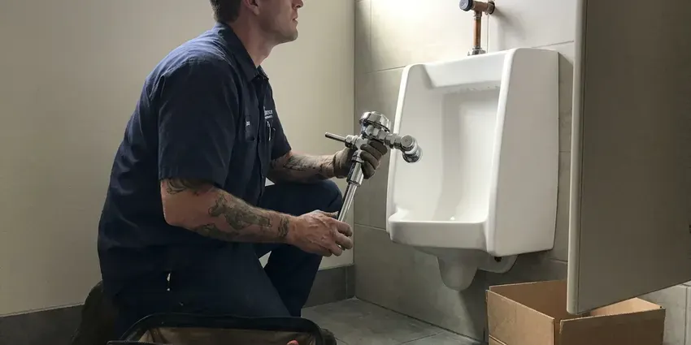

Faucet Replacement in Nitro, WV
Dealing with a leaky or outdated faucet in Nitro, WV? GJK Plumbing provides expert faucet replacement services to upgrade your home.
- Skilled Plumbers
- Quick Service Available
- New Shutoffs and Supplies
- Licensed, Insured Plumbers

A New Faucet and No More Drips in Nitro, WV.
Contact GJK Plumbing today for reliable plumbing solutions that fit your needs and budget.
Professional Faucet Replacement Services in Nitro, WV
GJK Plumbing specializes in all types of faucet replacement, from leaky kitchen sinks to outdated bathroom fixtures. We understand the plumbing challenges faced by homeowners in Nitro, making sure every replacement is done right the first time.
Our expertise includes:
- Matching new faucets to existing sink hole layouts
- Angle stop and supply line replacement during each swap
- Diagnose and replace aging or corroded faucet parts.

Additional Bathroom Plumbing Services in Nitro, WV
From toilets to showers, our bathroom plumbing team in Nitro, WV handles repairs, installs, and upgrades with tidy, code-compliant work.


Customers
Why Choose GJK Plumbing for Faucet Replacement in Nitro, WV?
Old faucets often fight back, with nuts fused by years of mineral scale. We have the basin wrenches and cutting tools to remove them cleanly and spare your sink.
- Clean Removal, We remove seized faucets without cracking porcelain or scratching stone.
- Quality Fixtures, We work with trusted faucet brands known for their durability and performance, offering options for every style and budget.
- Code Compliance, All faucet replacements adhere to local plumbing codes and standards in West Virginia, guaranteeing safety and proper function.
Citywide Coverage
No matter where you are located within Nitro, GJK Plumbing is ready to assist with your faucet replacement needs. We take pride in prompt service throughout the entire surrounding area.
Experienced Team
The GJK Plumbing team consists of highly trained and licensed plumbers who have completed countless faucet replacement projects. Their expertise delivers a professional and long-lasting installation, regardless of the complexity of the job.
Safety-First Approach
We shut off water and protect your cabinets and countertops before removing the old faucet. Any water damage under the sink is pointed out so you can deal with it.
Trusted Certified Nitro Plumbing Services Professionals
At GJK Plumbing, we take pride in providing licensed, certified plumbing services throughout Nitro, WV. Backed by recognized industry credentials, our experienced plumbers combine technical skill with genuine customer care. Whether it is repair, installation, or maintenance, we follow strict safety and quality standards to deliver long-lasting results you can trust.
Call Us Now PHCC Plumbing Contractor Recognition
PHCC Plumbing Contractor Recognition Better Business Bureau (BBB) Accreditation
Better Business Bureau (BBB) Accreditation Angi Certified Pro
Angi Certified Pro ISO 9001 Quality Management Certification
ISO 9001 Quality Management CertificationReliable Faucet Replacement Services in Nitro, WV
Moen Faucet Replacement in Nitro
Moen faucets are a common choice for many homeowners due to their style and warranty. If your Moen faucet is leaking, corroded, or simply outdated, GJK Plumbing offers professional replacement services. We understand the various valve types and cartridges used in Moen products, making the replacement process smooth and quick. We will ensure your new Moen faucet works the way it should and provides years of trouble-free use.

Water-Saving Faucet Upgrades in Nitro
Upgrading to a water-saving faucet can reduce your utility bills and conserve resources, which is always a smart practice in Nitro. We offer a range of low-flow and aerated faucet options that provide efficient water usage without giving up performance. Our plumbers can recommend the best models for your home and install them precisely.
Delta Faucet Replacement in Nitro, WV
Delta is a popular brand known for its innovative designs and reliable performance. Our technicians are very experienced in replacing all models of Delta faucets, from kitchen to bathroom. We stock common parts and are familiar with their specific installation requirements, allowing a quick and correct replacement. Trust us to maintain the quality you expect from your Delta fixture with expert service throughout Nitro, WV.
Tub and Shower Faucet Trim Replacement in Nitro, WV
If your tub or shower handles and spout look worn, a trim kit replacement can refresh them without opening the wall. We match the trim to your existing valve brand, such as Moen Posi-Temp or Delta Monitor. If the valve itself is outdated, we can discuss a valve upgrade. Trim swaps are quick and affordable.
Outdoor and Utility Faucet Replacement in Nitro
Outdoor spigots and utility sink faucets are important but often overlooked until they fail. Freezing weather is a regular part of West Virginia winters, and pipes in exterior walls, crawlspaces and older homes are at real risk. Heat, cold and mineral-heavy water can lead to cracks or persistent leaks. We provide sturdy replacements for hose bibs, laundry room faucets, and utility sink fixtures. Our installations focus on weather resistance and durability, preventing expensive water waste and potential foundation damage from constant dripping near your home.
Kitchen Faucet Replacement in Nitro
A leaking or broken kitchen faucet can be a real inconvenience, wasting water and causing potential damage. Our plumbers specialize in replacing all types of kitchen faucets, including pull-down, pull-out, single-handle, and bridge styles. We can help you choose a durable replacement that matches your kitchen's style and provides reliable performance, considering factors like local water hardness that can affect how long a fixture lasts. We ensure proper sealing and connection for a leak-free installation.
Cost-Effective Faucet Replacement Options in Nitro, WV
We understand that budget is a consideration for any home improvement. GJK Plumbing offers cost-effective faucet replacement solutions without cutting corners on quality. We can recommend various faucet options, from budget-friendly utility models to premium designer fixtures, providing clear pricing upfront. Our goal is to give you the best value and a long-lasting replacement that fits your needs and budget here in Nitro, WV.

Faucet Replacement Cost Comparison in Nitro, WV
A quality new faucet often costs $150 to $400 for the fixture, and installation adds about $150 to $300. Repeated cartridge repairs can add up fast, especially on older faucets with hard-to-find parts. We give you repair and replacement prices side by side. Many homeowners find replacement is the better long-run value.
Faucet Replacement Near Me in Nitro, WV
Our plumbers are local to Nitro and know the fixtures common in area homes. We work cleanly, explain your options and give a flat price before we start. Every replacement is backed by our workmanship guarantee.
Our team is familiar with the plumbing across Nitro, allowing us to provide tailored and lasting faucet replacement solutions for any home or business. We are always just a call away for quality service.
GJK Plumbing at a Glance
- Licensed and insured plumbers serving Nitro, WV
- 24/7 emergency service with same-day scheduling
- Upfront, flat-rate pricing before work begins
- 4.8-star rated by 832+ West Virginia customers
Nitro Map
Nitro Information
- Population
- 6,426
- Area codes
- Local
- Service area
- Nitro and communities within 40 miles
- Nearby
- St. Albans, Cross Lanes, Dunbar, Teays Valley
Many West Virginia homes rely on private wells or springs, and that water can carry iron, manganese or sulfur that discolors fixtures and laundry. Mineral-heavy water can speed up wear on internal faucet parts, so timely faucet replacement in Nitro, WV helps prevent leaks and water damage to your home.
Expert Services
Trust our professionals for reliable GJK Plumbing solutions in Nitro, WV.
Our Specialized Plumbing Services in Nitro, WV
At GJK Plumbing, we provide a complete range of plumbing services across Nitro, WV. From leak detection to full system installations, our team ensures fast, precise, and affordable service for both residential and commercial properties. Explore our core services below:


How Our Faucet Replacement Service Works in Nitro, WV
Our faucet replacement process is designed to be simple and stress-free for homeowners in Nitro, WV.
Request a Quote
Contact us at (681) 223-3607 to describe your faucet issue and schedule an appointment. We will gather initial details about your current faucet and your replacement needs.
On-Site Assessment
Our plumber will visit your Nitro home to inspect your existing faucet, plumbing, and the installation area. We will go over your options for new fixtures.
Professional Installation
Once you choose your new faucet, our experienced plumber will carefully remove the old unit and install the new one. We make sure all connections are sealed, and the faucet is tested for proper operation and leaks.
Frequently Asked Questions About Faucet Replacement in Nitro
Faucet replacement labor usually runs $150 to $350. Including a quality mid-range faucet, most jobs total $300 to $750. Touchless or high-end faucets can bring the total to $800 or more.
Yes. Faucet replacement is an excellent opportunity to upgrade to a newer style, a different finish, or even a touchless model. We can help you choose a faucet that is compatible with your existing sink and plumbing setup.
We check your sink's hole count and spacing and recommend compatible faucets. Many single-hole faucets include a deck plate for three-hole sinks.
Yes. Our experienced plumbers can provide recommendations based on your budget, style preferences, water pressure needs, and the specific requirements of your Nitro home's plumbing system. We can guide you through options like finishes, features, and water efficiency ratings.
Many West Virginia homes rely on private wells or springs, and that water can carry iron, manganese or sulfur that stains fixtures and laundry. Hard water can lead to mineral deposits, or limescale, building up inside faucets. This buildup can reduce water flow, cause drips, and corrode internal components over time. Regular maintenance or choosing faucets designed for hard water can help extend their lifespan.
Common signs include ongoing dripping or leaking even after minor repairs, visible corrosion or rust on the faucet body, reduced water pressure, difficulty turning the handles, or a wobbly faucet base. Sometimes, it is simply a style upgrade.
Usually, a permit is not required for a simple like-for-like faucet replacement in Nitro, WV. However, if the replacement involves significant changes to your home's plumbing system or relocation of water lines, a permit may be necessary. Our plumbers can advise you on any permit requirements specific to your job.
While some basic faucet replacements can be a DIY project, hiring a professional means the job is done correctly and avoids potential leaks or damage. Plumbers have the right tools, experience, and knowledge of local codes, which is particularly important when dealing with older plumbing or challenging installations in Nitro homes.
What People Are Saying About Our Plumbing Experts?

Robert G.
The trenchless sewer replacement saved our front yard. They walked us through the camera inspection footage first so we knew exactly what we were paying for.
Sewer Line Replacement · Charleston, WV
Emily R.
I called GJK Plumbing for plumbing repair, and the technician was fast, polite, and thorough. They explained the problem clearly and fixed it the same day. I will definitely hire them again. Highly recommended!
Plumbing Repair · South Charleston, WV
Daniel K.
A pipe burst at 11 pm and they actually answered. The plumber showed up within the hour, shut everything down, and had us back to normal the next morning. Could not ask for more.
Emergency Plumbing · Nitro, WV
Sofia M.
Two new toilets installed in one visit, no mess left behind, and the tech even adjusted a faucet he noticed was dripping. Fair pricing and really friendly.
Toilet Installation · Cross Lanes, WV
Mark T.
When our office needed drain cleaning, GJK Plumbing provided quick, reliable service. The plumber arrived on time and made sure every drain flowed perfectly before leaving. Very satisfied.
Drain Cleaning · Cross Lanes, WVLaura S.
I scheduled a water heater replacement, and the team made the process smooth and affordable. The new unit works perfectly, and they cleaned up after completing the job.
Water Heater Replacement · South Charleston, WV